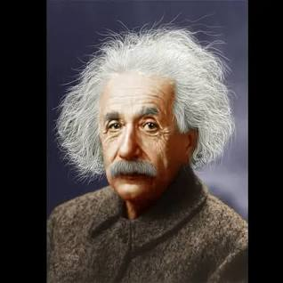
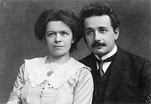
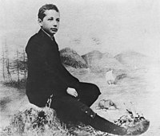
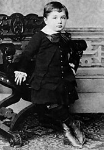
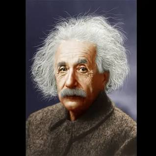
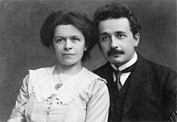
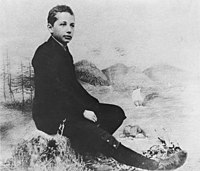
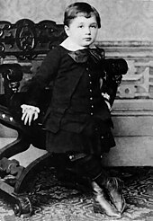

A Genius To Be Reckoned
About Albert Einstein
Albert Einstein (14 March 1879 – 18 April 1955) was a German-born theoretical physicist who is widely held to be one of the greatest and most influential scientists of all time. Best known for developing the theory of relativity, Einstein also made important contributions to quantum mechanics, and was thus a central figure in the revolutionary reshaping of the scientific understanding of nature that modern physics accomplished in the first decades of the twentieth century. His mass–energy equivalence formula E = mc2, which arises from relativity theory, has been called "the world's most famous equation". He received the 1921 Nobel Prize in Physics "for his services to theoretical physics, and especially for his discovery of the law of the photoelectric effect", a pivotal step in the development of quantum theory. His work is also known for its influence on the philosophy of science. In a 1999 poll of 130 leading physicists worldwide by the British journal Physics World, Einstein was ranked the greatest physicist of all time. His intellectual achievements and originality have made the word Einstein broadly synonymous with genius.
In 1905, a year sometimes described as his annus mirabilis (miracle year), Einstein published four groundbreaking papers. These outlined a theory of the photoelectric effect, explained Brownian motion, introduced his special theory of relativity—a theory which addressed the inability of classical mechanics to account satisfactorily for the behavior of the electromagnetic field—and demonstrated that if the special theory is correct, mass and energy are equivalent to each other. In 1915, he proposed a general theory of relativity that extended his system of mechanics to incorporate gravitation. A cosmological paper that he published the following year laid out the implications of general relativity for the modeling of the structure and evolution of the universe as a whole. The middle part of his career also saw him making important contributions to statistical mechanics and quantum theory. Especially notable was his work on the quantum physics of radiation, in which light consists of particles, subsequently called photons.
For much of the last phase of his academic life, Einstein worked on two endeavors that proved ultimately unsuccessful. Firstly, he fought a long rearguard action against quantum theory's introduction of fundamental randomness into science's picture of the world, objecting that "God does not play dice". Secondly, he attempted to devise a unified field theory by generalizing his geometric theory of gravitation to include electromagnetism too. As a result, he became increasingly isolated from the mainstream of modern physics. Born in the German Empire, Einstein moved to Switzerland in 1895, forsaking his German citizenship (as a subject of the Kingdom of Württemberg) the following year. In 1897, at the age of seventeen, he enrolled in the mathematics and physics teaching diploma program at the Swiss Federal polytechnic school in Zürich, graduating in 1900. In 1901, he acquired Swiss citizenship, which he kept for the rest of his life. In 1903, he secured a permanent position at the Swiss Patent Office in Bern. In 1905, he submitted a successful PhD dissertation to the University of Zurich. In 1914, he moved to Berlin in order to join the Prussian Academy of Sciences and the Humboldt University of Berlin. In 1917, he became director of the Kaiser Wilhelm Institute for Physics; he also became a German citizen again, this time as a subject of the Kingdom of Prussia. In 1933, while he was visiting the United States, Adolf Hitler came to power in Germany. Horrified by the Nazi "war of extermination" against his fellow Jews, Einstein decided to remain in the US, and was granted American citizenship in 1940. On the eve of World War II, he endorsed a letter to President Franklin D. Roosevelt alerting him to the potential German nuclear weapons program and recommending that the US begin similar research. Einstein supported the Allies but generally viewed the idea of nuclear weapons with great dismay.

Interesting Facts About Einstein
- Einstein was a hard-headed child. When he was born, seeing the shape of the back of his head, his mother and family believed it was a malformation.
- Young Einstein had a hard time speaking. He spoke very slowly and without much volume. It was difficult for him to construct whole sentences, until at the age of 9 he began to speak normally.
- A compass sparked his interest in science. When Einstein was 5 years old and sick in bed, his father gave him a compass and the little boy was fascinated that the needle always pointed to the same place. This made him understand that there were forces that drove things where there was apparently nothing.
- Einstein did not pass his college entrance exam. He passed the science and mathematics tests, but failed the other subjects such as history, languages and geography. He had to go to private lessons and take a new exam to get into the university.
- Einstein’s brain is conserved and has been and is the object of multiple studies. Thomas Stoltz Harvey, the doctor who performed the autopsy on the scientist’s corpse, kept his brain in a jar and, after obtaining permission from Hans Albert Einstein, distributed pieces of it among several scientists.
- He was a talented violinist. One of the most unknown aspects of the physicist’s personal life was his fondness for the violin. At the age of 6 he began to take classes, he himself said that if he had not been a scientist he would have dedicated himself to music.
- Einstein had three nationalities. He was German, Swiss and American. At the end of his life, a journalist asked him what possible repercussions his multiple nationalities had had on his fame. Einstein replied, “If my theories had turned out to be false, Americans would say that I was a Swiss physicist; the Swiss, who was a German scientist; and the Germans, who was a Jewish astronomer.” Being Jewish, Einstein had to endure countless attempts to discredit his research.
- He loathed science fiction. Einstein was against science fiction because he felt it changed people’s understanding of science, giving them a false illusion about things that couldn’t happen. Interestingly, after a few years, his face was the starting point of one of the most famous characters in Star Wars, Yoda who has typical features of his, such as his eyes and wrinkles.
- He could have been Israel’s second president. After the death of Israel’s first president in 1952, Chaim Weizmann, the physicist was a direct candidate to take his place because he was considered “the best living Jew.” However, he immediately rejected the offer arguing that because of his age he did not feel able to assume such responsibility.
- He urged the US to build an atomic bomb. Despite being a pacifist, Einstein, alarmed by the Nazi power, alerted US President Franklin Delano Roosevelt in a letter to the intentions of the Germans to create an atomic bomb and offered to collaborate to build it. Roosevelt considered Einstein’s help a risk to the security of the project and dismissed his collaboration.
.jpg) 






